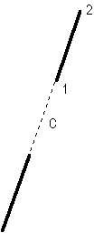

Cette page reprend l'aide d'OptGeo 3.03 (version pour ordinateur, à la souris). Dans la version web, on touche ou on clique au lieu de « cliquer deux fois » ; voir Utiliser OptGeo sur le web.
Diaphragme à iris

Définition
Il est défini à la souris par les points C (centre du diaphragme), 1 (bord intérieur) et 2 (bord extérieur). Le trou central est évidemment transparent, le reste du diaphragme est absorbant sur ses deux faces.
Le diaphragme peut être ajouté :
- en cliquant sur le bouton de la barre d'outils ayant la forme ci-dessus, puis en faisant un clic simple pour saisir le centre, puis en faisant un clic simple pour saisir le premier point, puis en faisant un clic simple pour saisir le second (ne pas maintenir le bouton de la souris enfoncé entre les deux points)
OU
- menu « Ajouter » puis « Système optique idéal » puis « Diaphragme ».
Options
On peut imposer
- l'épaisseur et la couleur du trait représentant le diaphragme à l'écran
Ces propriétés peuvent être rendues accessibles :
- à la construction du diaphragme si on passe par le menu « Ajouter »
- à tout instant en cliquant sur le bouton « Propriétés » de la barre d'outils, puis en cliquant sur un des cercles bleus qui apparaissent sur l'élément dont on veut obtenir les propriétés ; ne pas oublier à la fin de cliquer sur le bouton « Fin prop. » de la barre d'outils pour quitter le mode propriétés.
Divers
Quand on est en mode déplacement, on peut :
- translater le diaphragme
- changer son orientation et sa taille extérieure en utilisant les points extrêmes
- changer son rayon intérieur (ouverture du diaphragme) en utilisant les points intérieurs